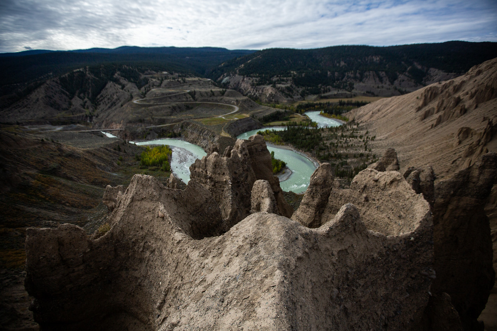

Squamish, BC · Squamish River
Real moving water through the valley under the Tantalus Range. We drop you upstream and pick you up downstream. Up to 3 paddlers per canoe.
Home › Where to Paddle › Squamish River
Paddling Squamish River
The Squamish River is the big paddle in town: glacier-fed, moving and wide, running down the valley past the Tantalus Range toward the estuary and Howe Sound. A downriver canoe trip here feels like a proper expedition, even as a day trip.
We handle the logistics. You pick a put-in, we deliver the canoe there, and we arrange a pickup downstream so nobody has to paddle back against the current. Jeremy will talk through the river level and the route for your date before you go.
Best for: Paddlers with moving-water experience, adventurous day trips.
Local Knowledge
The river is high and pushy with snowmelt in late spring and early summer and calmer by late summer. Ask about levels before you book.
Not a beginner paddle. Warm up on a lake first if you've never canoed in current.
Watch for seals near the lower river and eagles in winter.
5-Star Google Reviews
"An all round incredible experience. Took a 3 person canoe down the Squamish River from the Ashlu FSR bridge to around the Squamish Estuary and into the Mamquam Blind. River level was perfect for the journey. No major rapids."
"I rented a canoe from Jeremy last weekend for a day trip up the Squamish River. The canoe was in excellent condition, handled the water extremely well and was a great experience overall! If you’re looking for a good canoe rental in Squamish I would 10/10 recommend this service to anyone!"
"We had an incredible day renting boats from Jeremy, he gave us everything we needed including paddles and lifejackets. Communication was super easy and he gave us awesome recommendations of where to paddle on the Squamish River!"
"Had an absolute blast canoeing here! Jeremy was super helpful and made the process quick and easy. We launched from the Squamish boat launch and paddled into the river a bit. Got some good views and even some seals playing around in the river!"
Good to Know
We don't recommend it. The Squamish River has real current and big seasonal swings. At least one prior moving-water trip is a good idea. Beginners should start on Cat Lake or Alice Lake.
Yes. We deliver to your put-in and pick up at your take-out, so it's a one-way paddle.
Yes. That's a separate, popular trip. See our Echo Lake canoe rental page.
See all our Squamish canoe delivery spots, or browse every place we deliver.
Ready?
Pick your date, tell us it's Squamish River, and we'll have the canoe waiting at the launch.
Or email squamishcanoerental@gmail.com